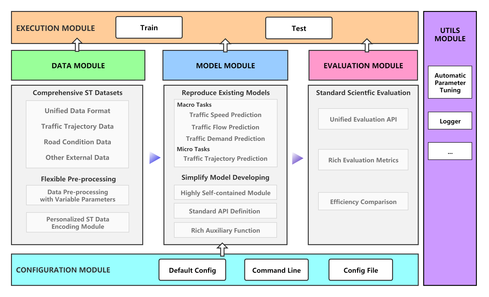

Introduction¶
TrafficDL is an open source experimental toolkit in the field of traffic prediction, which aims to help researchers to one-click training and comparison of baseline models or custom models.
TrafficDL currently supports the following tasks:
Traffic State Prediction
Traffic Flow Prediction
Traffic Speed Prediction
On-Demand Service Prediction
Trajectory Next-Location Prediction
Features¶
Unified and extensible data structure: We design a unified and extensible data structure for original dataset (Atomic Files), model input data (Batch), evaluation input data (Python.dict).
Modular design: The architecture of the toolkit is composed of six modules: Configuration Module, Data Module, Model Module, Evaluation Module, Execution Module, Utils Module. Through this modular design, developers can easily build new models.
Comprehensive benchmark models and datasets: We have implemented 14 traffic prediction algorithms, supports the following tasks: traffic state prediction(including traffic flow prediction, traffic speed prediction, On-Demand service prediction) and trajectory next-location prediction. To construct a comprehensive benchmark, we incorporate 29 commonly used datasets for evaluating traffic prediction methods.
Rich Evaluation Metrics: We support a series of commonly used evaluation metrics in each task.
Overall Framework¶

Configuration Module: Responsible for managing all the parameters involved in the framework.
Data Module: Responsible for loading data sets and data preprocessing operations.
Model Module: Responsible for initializing the reproduced baseline model or custom model.
Evaluation Module: Responsible for evaluating model prediction results through multiple indicators.
Execution Module: Responsible for model training and prediction.
Utils Module: Responsible for providing users with practical tools.